NHỮNG THAY ĐỔI TRÊN BẢN ECUS5VNACCS 2018
(Phiên bản update 18/12/2022)
Phần mềm ECUS5VNACCS2018 - Ngày phát hành 30/12/2022
Phiên bản cập nhật ngày 18/12/2022 được phát hành ngày 30/12/2022 bổ sung, sửa đổi các chức năng sau:
- 1. Sửa lại cơ chế của nghiệp vụ gọi lại tờ khai IDB/EDB.
Sửa lại nghiệp vụ IDB/EDB như sau:
- Đối với trường hợp doanh nghiệp gọi tờ khai bằng nghiệp vụ IDB/EDB trên form tờ khai mới hoàn toàn hoặc tờ khai chưa có số, phần mềm sẽ hiển thị form chức năng IDB/EDB để doanh nghiệp nhập vào số tờ khai để gọi về.
- Nếu doanh nghiệp gọi tờ khai bằng nghiệp vụ IDB/EDB trên tờ khai đã có số thì không hiện form chức năng IDB/EDB, mà gọi theo số tờ khai đang có trên form tờ khai.
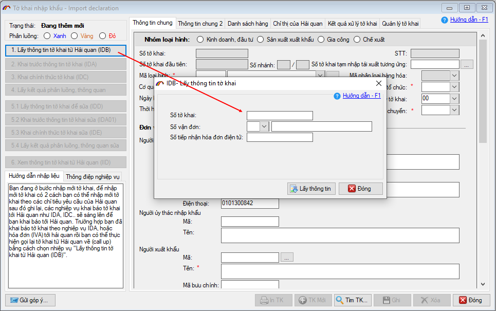
- 2. Bổ sung tích chọn "Không sử dụng mã bảo mật khi truyền nhận dữ liệu trình ký"
Phần mềm bổ sung tích chọn "Không sử dụng mã bảo mật khi truyền nhận dữ liệu trình ký" trên form thiết lập trình ký, để sửa lỗi Parametter bên đầu duyệt ký.
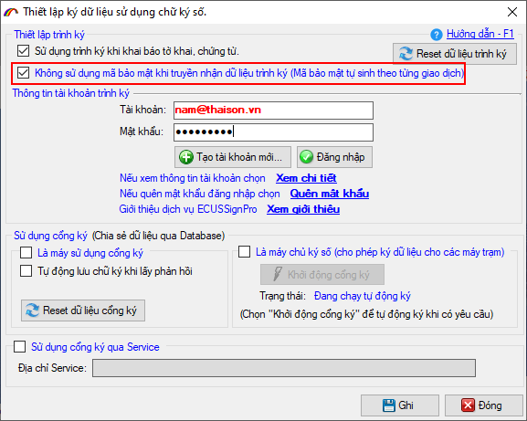
- 3. Bổ sung cho phép sử dụng trình ký ECUSSign Pro khi khai báo dịch vụ công:
Phần mềm bổ sung để cho phép người dùng có thể trình ký thông qua ECUSSign Pro khi khai báo các thủ tục của dịch vụ công trực tuyến.
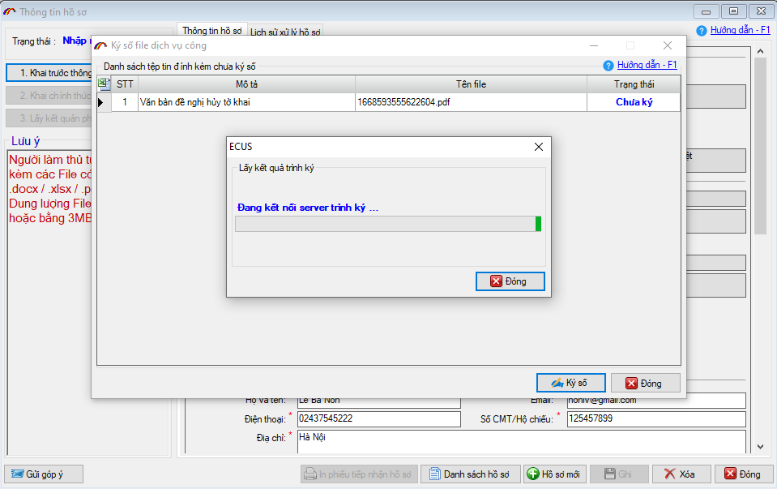
- 4. Khắc phục lỗi tự động ghép mã hàng vào tên hàng với tờ khai Kinh doanh.
Bản cập nhật 06/12/2022 khắc phục tính trạng tự động ghép Mã hàng vào trong Tên hàng và gửi lên Hải quan đối với tờ khai xuất Kinh doanh.
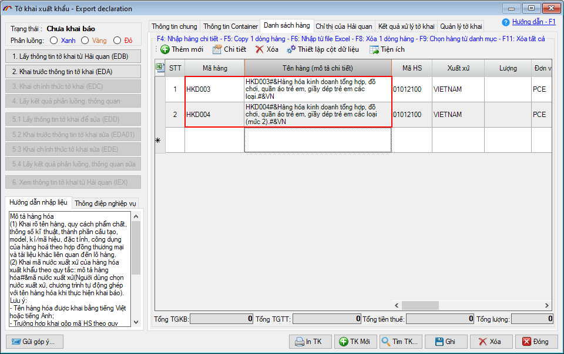
- 5. Khắc phục lỗi import danh sách hàng hóa (F6) cho tờ khai nhập Gia công.
Khắc phục tình huống khi Import hàng hóa (chức năng F6) cho tờ khai nhập khẩu Gia công, Mã biểu thuế nhập khẩu đang tự động đặt bằng B30, mà không đọc từ file excel hoặc cấu hình ở mục hệ thống. Ở bản cập nhật này, phần mềm sửa lại như sau:
- 1. Ưu tiên lấy mã biểu thuế theo file excel.
- 2. Nếu file excel không có dữ liệu về mã biểu thuế, thì sẽ lấy từ cấu hình hệ thống, mục 5 (đối với loại hình Gia công)
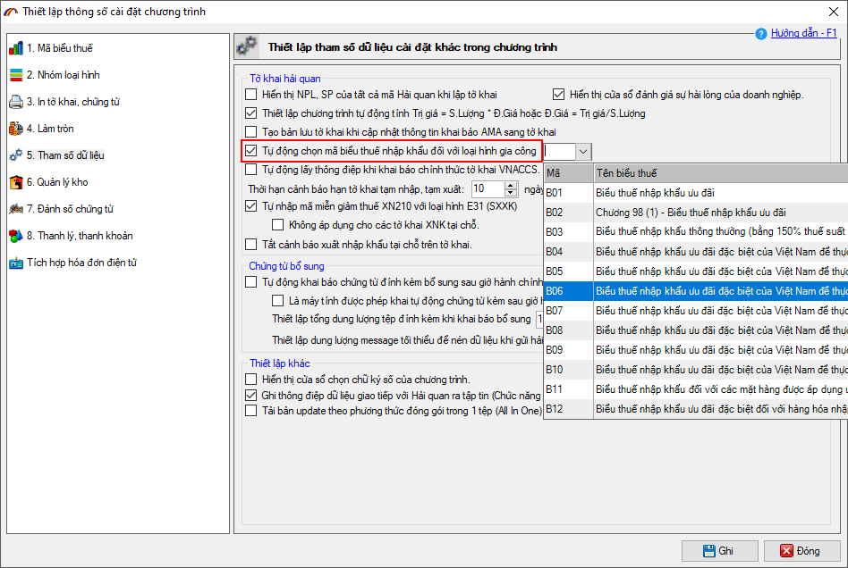
- 3. Nếu không có dữ liệu từ file excel, hệ thống cũng không cấu hình thì tự động điền mã biểu thuế là: B30
- 6. Sửa lại cơ chế đóng gói phần Ghi chú trong BCQT Gia công.
Khi báo cáo quyết toán loại hình Gia công, phần mềm thực hiện đóng gói nội dung Ghi chú để gửi lên Hải quan sẽ lấy từ danh sách hợp đồng. Đồng thời sửa lại tiêu đề để doanh nghiệp lưu ý.
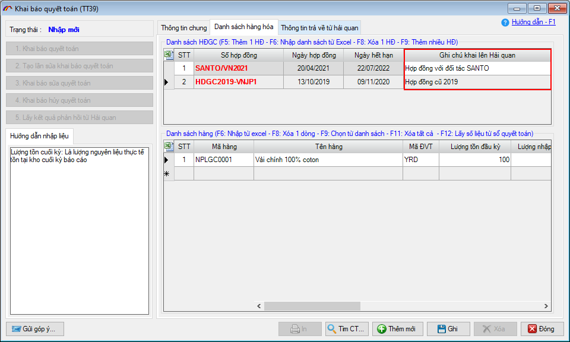
- 7. Sửa lại chỉ tiêu Tên người nộp phí trên tờ khai nộp phí TP Hồ Chí Minh.
Sửa lại chỉ tiêu Tên người nộp phí trên tờ khai nộp phí TP Hồ Chí Minh, để tránh trường hợp không nhận được biên lai thu phí với các nội dung sửa đổi như sau:
- Giới hạn độ dài < 50 ký tự.
- Không cho phép nhập ký tự đặc biệt.
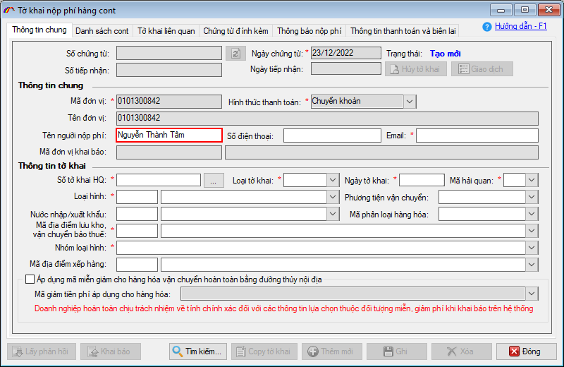
- 8. Chỉnh sửa tăng độ dài trường dữ liệu Nội dung thanh toán.
Chỉnh sửa tăng độ dài trường dữ liệu Nội dung thanh toán trên tờ khai nộp phí TP Hồ Chí Minh lên 2500 ký tự để tránh trường hợp lỗi Truntcated khi lấy phản hồi.
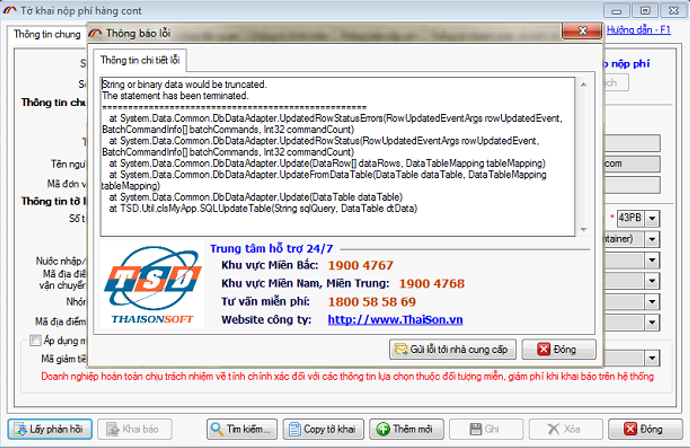
- 9. Bổ sung tìm kiếm theo Số tờ khai Hải quan
Bổ sung điều kiện tìm kiếm theo Số tờ khai hải quan trên danh sách tờ khai nộp phí TP Hồ Chí Minh.
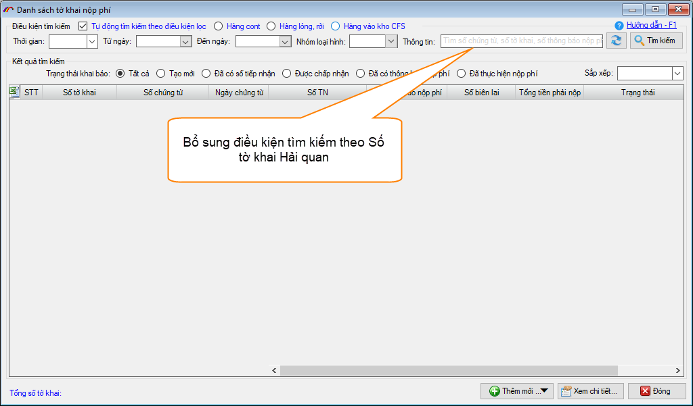
- 10. Bổ sung thêm tích chọn mã miễn giảm theo Thông báo số 503/TB-CVĐTNĐ.
Bổ sung thêm tích chọn mã miễn giảm theo Thông báo số 503/TB-CVĐTNĐ ban hành ngày 26/12/2022 về việc giảm mức thu phí sử dụng công trình, kết cấu hạ tầng, công trình dịch vụ, tiện ích công cộng trong khu vực cửa khẩu cảng biển Hải Phòng theo Nghị quyết số 21/NQ-HĐND.
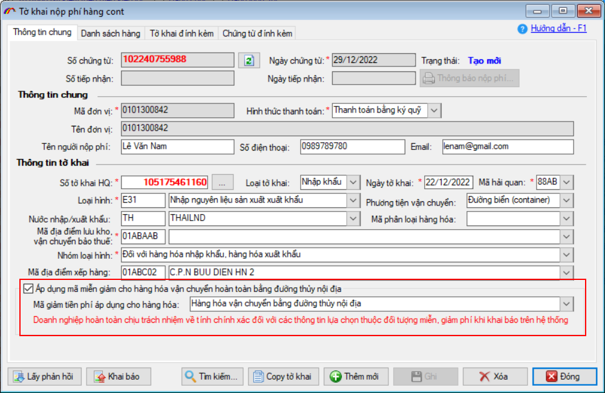
- 11. Bổ sung thêm chỉ tiêu Số tiền được giảm vào trong thông báo nộp phí.
Bổ sung thêm chỉ tiêu Tổng số tiền được giảm vào trong thông báo nộp phí.
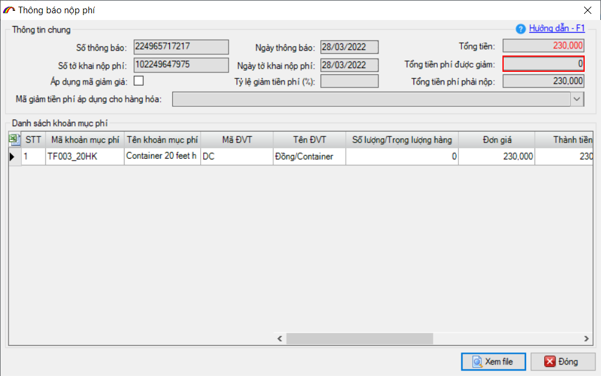
- 12. Cảnh báo lần thanh toán có nhiều hơn 50 lần thông báo phí.
Đưa ra cảnh báo nếu doanh nghiệp chọn nhiều hơn 50 lần thông báo phí vào 1 lần thanh toán đối với chức năng thu phia TP Hồ Chí Minh, để tránh tình trạng lỗi.
- 13. Xử lý lỗi thừa nhiều dấu phẩy trong chỉ tiêu địa chỉ người mua hàng.
Trong chức năng hóa đơn tích hợp, xử lý trường hợp địa chỉ người mua hàng trên hóa đơn thừa nhiều dấu phẩy do không có địa chỉ 2, địa chỉ 3 hoặc địa chỉ 4.
- 14. Bổ sung chức năng cấu hình XML tờ khai cho DN là khách hàng.
Trong chức năng hóa đơn tích hợp, bổ sung chức năng cấu hình XML tờ khai cho doanh nghiệp là khách hàng, do mỗi khách hàng có các ký hiệu hóa đơn là khác nhau. Cụ thể như sau:
- Bổ sung MA_DV trong bảng cấu hình XML.
- Lưu cấu hình theo MA_DV.
- Mặc định khi vào chương trình MA_DV=null.
- Thực hiện ghi lại cấu hình với mã đơn vị được cấu hình tương ứng ở form danh sách hóa đơn đối với trường hợp mã DV là khách hàng.
- Ghi lại ở form cấu hình hóa đơn(bên ngoài) với mã đơn vị là đại lý .
- 15. Ngoài ra, còn có nhiều mục sửa đổi bổ sung khác nhằm nâng cao hiệu suất và tạo sự thuận lợi cho người dùng...
...
Bản quyền © thuộc về Công ty TNHH Phát triển công nghệ Thái Sơn